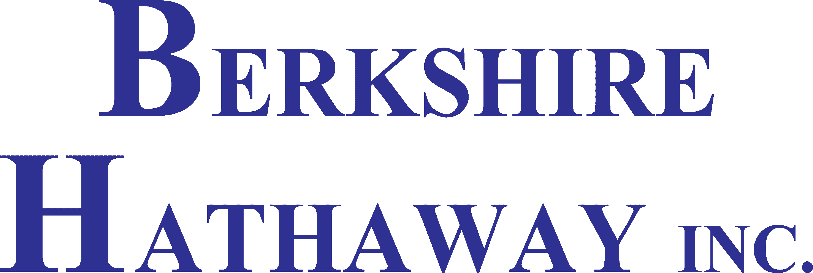

Your guide to
Research and consulting services to help you navigate critical inflection points in your insurtech journey.
Research and consulting services to help you navigate critical inflection points in your insurtech journey.

No one [on our team] really knew how to proceed forward because this is an area that few people have experience with.
and had been down this road before. Their pattern recognition help us create a
David McFarland CEO
Finsure took the pressure of us needing to be technologists and has allowed us to focus on what we are really good at, speciality insurance and distribution.
Having that skill set added to our already dense team has Michelle has been a true extension of our team.
Jeffrey Samuels President
Fortunately, Michelle and her team provided us with the we needed. They helped us navigate the complex vendor selection process by identifying and evaluating potential vendors.
in ensuring that we made an informed decision and chose a vendor that aligned with our business goals.
Keju Xu CTO/Co-Founder
The Finsure team brings professionalism and to every interaction, and they go above and beyond to add value in each conversation.
Their integrity, energy, and care set them apart, making them feel like a . Working with the Finsure team has been an absolute pleasure, and simply, fun!
Ashley Nevins Head of Product
Michelle has vast experience in the insurtech industry. She’s at the intersection of US insurance regulations and insurtech platforms.
Her suggestions and insights have proved vital as we continue to develop our .
Udit Agarwal Director of Integrations
I’ve found Michelle to be a joy to collaborating with, especially given how keyed into the she is, including the .
She’s also fun to hang out with. Hope to be able to collaborate with Michelle in the future.
Steve Sherlock Co-Founder
Finsure has really helped our startup understand the of the insurance landscape.
As a newcomer to insurance, their has been invaluable getting me up to speed in designing products that will for our customers.
Chris Adams Head of Design
Michelle has continually proven to have . Michelle has been .
She is always there to help us whenever we need it and puts a lot of work and effort in everything she has done for us, which is why she serves as a .
Gabino Fraga Jesterhoudt CEO
Michelle, as usual, provided for our start-up. It is rare that we get to speak to someone with such as well as wide-ranging insurance connections.
Julian Fox CEO
Michelle has been touted as the ecosystem by multiple people. She is an LP for the fund. She helps insurtechs and insurers with among other things.
Tony Lew Co-Founder and Managing Director
I'm tremendously relieved to have a for all things system-related. It doesn't end with the policy admin system, but Michelle and her team can help we need Day 1, and what we will need when we gain more scale. Having their understanding and advocacy is extremely valuable and reassuring.
Will Sale Founder
We were struggling to effectively process premium reconciliation at the transaction level. Partial payment, late payments, unallocated funds were causing an large straint to our accounting and underwriting operations teams.
Finsure knew how to diagnose and solve the problem easily.
Ralph Blust President/CRO
Finsure , by pre-qualifying the vendors, communicating on our behalf, establishing demos, and going back and forth to the vendors with questions. I estimate this took a 6 month process (w/o Finsure) and shortened it to 6 weeks.
Will Johnson CEO
We bring a deep understanding of policy software and are equipped with the knowledge to help you align your PAS to your existing core tech stack. As your expert resource, we can be guardrails for builds or match you with the right software vendors for your business needs, budget, and time constraints.
We work with you to design a map that integrates internal admin flows with your customer journey. We then provide your brokerage arm with tools that streamline manual steps and help you sell your first policy.
We assess your current technology stack and help you identify strengths, weaknesses, and opportunities for automation. Then we evaluate how to buy, build, or partner and cohesively build our recommendations into a roadmap to where you want to be.
We provide subject matter expertise to turn subpar documentation into API specifications that we can execute on or hand off to your development team. We function as thought partners in the architecture of your system, and we execute on intentional software builds.
We help you capture the data you need today to enable you to make the decisions you need tomorrow. And if it’s poorly formatted, you’re still going to have a really hard time with it. We then design a format that works well for your needs across all your systems, so that when you need it, it's already modeled—and you can get the most out of it.
We are dedicated to using ETL (or ELT) to meld your legacy data into a new, standardized format, or to run your business from there. We’ll help you plan and code data flows & pipelines that are robust, sustainable, observable, and well-documented.
We work with you to determine the right metrics to succeed in the realms of marketing, product, claims, actuarial, customer experience, retention, site performance, and accounting. Whether you’re just getting started or are already established, we’ll help your teams get on the same page and set you up for success with a modern metric store and dashboards.
Sometimes you need A/B tests: well-planned, executed, and interpreted. Sometimes it’s a full production model, including feature engineering, model selection, training, validation, and tuning. We collect, analyze, and interpret your data to understand when you need machine learning and the best places to use it. We’ll work with you to determine the right approach for your data and use case, and get it done.
We have worked on everything from customer journey to quote flow taking this to the lower end of the funnel all the way to marketing analytics. Because of our breadth of experiences and roles, we can help you avoid the common pitfalls of user experience no matter where you are.
We each individually have more than a decade of first-hand experience with insurance carriers and capacity providers and can confidently speak insurance fluently. While we are not underwriters, our understanding of the inner workings of insurance allows us to help insurtech companies create better systems.
As fractional CTO/CDOs we bring our experience with Pre-seed, Seed Stage and Series B to help you understand where your company is today and its vision for the future. The role of a CTO/CDO leads us to effectively work with your c-suite, level up your internal team, and execute on your product.
We have conducted comprehensive research of many companies' policy systems, AMS, and billing to understand tech stacks, data structure and insurance features and functionality. Because we value meaningful and unbiased customer relationships, we don’t take vendor kickbacks, and our time is invested in better serving you.
prior to engaging. By identifying industry practices that were at odds with our business model, .
Type of engagement:
Identifying industry standards
 Rathi Niyogi CEO
Rathi Niyogi CEO
Prior to Finsure, we had a challenge with . From the onset, the competence was far and above our typical vendors. , and we quickly received support beyond our requests. We didn't know what to ask, they delivered many valuable ideas and paths forward.
Type of engagement:
Direct Connections (to Carriers) via API
Jonathon Cofounder & COO
It given our limited resources. Consistent communication and pushing the initiative forward even with roadblocks. Finsure provided consistent communication and pushing the initiative forward even with roadblocks. Now we have that we can take and run with.
Type of engagement:
Coordinating efforts to create foundation for insurance data
 Jessica Rosenow Director, Data and Analytics
Jessica Rosenow Director, Data and Analytics
, we needed help in defining our goals and narrowing down the potential solutions. The Finsure team was able to quickly understand our problem and efficiently assist the relevant stakeholders with the task.
Type of engagement:
Policy Admin System Decision
 Pete Grant CEO
Pete Grant CEO
PAS are complex by nature and hard to evaluate. to current customers which allowed us to not second guess our decision. Now it is full steam ahead.
Type of engagement:
Policy Admin System - Vendor Selection
 Dave Stanard Vice President
Previous to Finsure's support, this was a goal of the organization, but lacked resources and to complete the project. Finsure had a willingness to hear a problem through, dissect it granularly and deliver a . We are now more adept than ever at delivering our core product(s).
Type of engagement:
Policy Admin System - Vendor Selection
 Paul Bessire VP of Data
Paul Bessire VP of Data